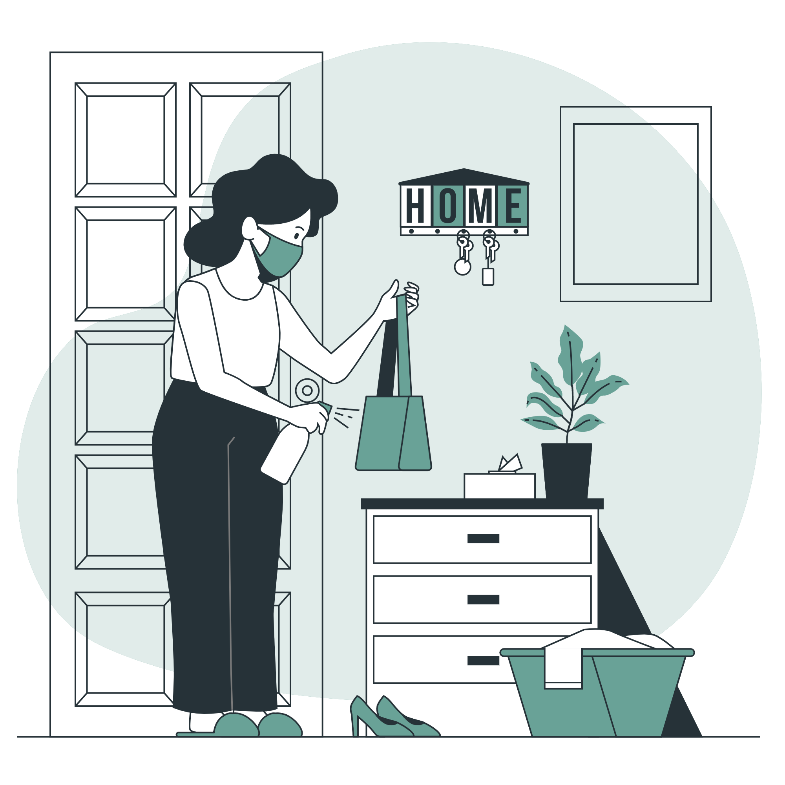

COVID-19 E SEUS MEIOS DE PROPAGAÇÃO
6 atos do dia-a-dia a se evitar
O contato físico é uma das principais formas do novo
Coronavirus passar de pessoa para pessoa.

Um jeito de desacelerar a disseminação do vírus é se
manter dentro de casa, evitando se contaminar ou então
contaminar o outro. Sair de casa sem necessidade ajuda
o vírus se proliferar.
Embora praticamente todos os locais possuam placas
ou cartazes avisando sobre a necessidade da utilização
da máscara, há muitas pessoas que não a usam, ou usam
de forma imprópria.
Durante o fim de ano, onde há diversas comemorações,
mesmo em plena pandemia as aglomerações não deixaram
de ocorrer, o que ocasionou um agravamento da pandemia
logo no início do ano seguinte.
Juntamente com a necessidade da utilização correta
da máscara facial, é recomendável a higienização das
mãos de tempos em tempos com água e sabão e a utilização
do álcool 70 sempre. E ainda, a higienização de
pertences e materiais que entramos em contato.
O ato de compartilhar objetos é uma das formas mais
vantajosasa para o vírus, pois ele passa de pessoa em
pessoa por meio de um simples objeto, por exemplo, uma caneta.
Daí a necessidade de não compartilhar objetos e frequentemente
higieniza-los.
Precisamos de você
Com a colaboração de todos, logo estaremos de volta
a nossa vida cotidiana (aquela normal de uns tempos atrás).
Isso não é um favor, é uma obrigação de todos nós,
todos dependemos disso.